1. Doruk Özel Bursa Hastanesi - Bursa
2. Doruk Özel Yıldırım Hastanesi - Bursa
3. Delta Hospital - İstanbul
4. Onur Eczanesi - Bursa
5. Orhangazi Cargill Aile Sağlık Merkezi - Bursa
6. Taşova Aile Sağlığı Merkezi - Amasya
7. 125. Atatürk Aile Sağlığı Merkezi - Bursa
8. Erenler Akçakoca Aile Sağlığı Merkezi - İzmit
9. Gaziosmanpaşa Merkez Aile Sağlığı Merkezi – İstanbul
10. Çirişhane Aile Sağlığı Merkezi - Bursa
11. Özel Iğdır Kadın Doğum Hastanesi - Iğdır
12. Fethiye Bulvar Aile Sağlığı Merkezi - Bursa
13. Yenidoğan Aile Sağlığı Merkezi - İzmit
14. Göksu Ecza Deposu - Konya
15. PET DÜNYASI Veteriner Kliniği - İstanbul
16. Rumeli Hospital - İstanbul
17. Yiğitler Aile Sağlığı Merkezi - Bursa
18. Özel Mutlu Yaşam Tıp Merkezi - İstanbul
19. Özel Vitale Kadın Hastalıkları ve Doğum Hastanesi - Antalya
20. Esentepe Tıp Merkezi - Bursa
21. Çayırbağ Aile Sağlığı Merkezi - Afyonkarahisar
22. Özel Antalya Anadolu Hastanesi - Antalya
23. Özel Rentıp Hastanesi - Bursa
24. Borçelik Çelik Sanayii Ticaret A.Ş. - Bursa
25. Aunde Teknik Tekstil San. ve Tic. A.Ş. - Bursa
26. Marso Endüstriyel Soğutma Sistemleri - Bursa
27. Kırcılar A.Ş. - Bursa
28. Keçiören Yurt Aile Sağlığı Merkezi - Ankara
29. Köktürkler Hayvancılık Gıda Tarım Turizm Otelcilik İnş. San. Tic. Ltd. Şti. - Afyonkarahisar
30. Beşevler Aile Sağlığı Merkezi - Bursa
31. Bahar Aile Sağlığı Merkezi - Bursa
32. Havan Ecza Deposu - Erzurum
33. Keçiören Şenlik Aile Sağlığı Merkezi - Ankara
34. Başaran Aile Sağlığı Merkezi - Bursa
35. Üsküdar Güzeltepe Aile Sağlığı Merkezi - İstanbul
36. Miktad Armağan Aile Sağlığı Merkezi - İstanbul
37. Çığır Kimya Sanayi ve Ticaret A.Ş. - Tekirdağ
38. Çığır Kimya Sanayi ve Ticaret A.Ş. - İstanbul
39. Başar Kimya Makina ve Kalıp Sanayi Dış Ticaret A.Ş. - İstanbul
40. Maltepe Aile Sağlığı Merkezi - İstanbul
41. Tareks A.Ş. - Kırklareli
42. Ervet Veteriner Kliniği - Tekirdağ
43. Gevher Nesibe Aile Sağlığı Merkezi - İstanbul
44. Altınözü Boynuyoğun Aile Sağlığı Merkezi - Hatay
45. Doğumevi Aile Sağlığı Merkezi - Ankara
46. Veteriner Hekim Cumhur Narçın - Tekirdağ
47. Veteriner Hekim Mert Günel - Tekirdağ
48. Veteriner Hekim Osman Gültekin - Edirne
49. Veteriner Hekim Ahmet Terzi - Edirne
50. Turunçoğlu Veteriner ve Pet. Ürün. San. Dış. Tic. Ltd. Şti. - İstanbul
51. Medicafarm - Aydın
52. Erdek Karşıyaka Aile Sağlığı Merkezi - Balıkesir
53. Veteriner Hekim Hakan Pak - Kırklareli
54. Damızlık Sığır Yetiştiricileri Birliği - Edirne
55. Veteriner Hekim Aykut Seyhan - Edirne
56. Özcan Ecza Deposu İlaç San. ve Tic. Ltd. Şti. - Malatya
57. Özcan Ecza Deposu İlaç San. ve Tic. Ltd. Şti. - İzmir
58. UMS Soğutma Sistemleri - İzmir
59. Fethiye 11 No' lu Kadıköy Aile Sağlığı Merkezi - Muğla
60. Kartal Aile Sağlığı Merkezi - İstanbul
61. Karacabey Devlet Hastanesi - Bursa
62. Veteriner Hekim Gürhan Aygün - Edirne
63. Esenler Aile Sağlığı Merkezi - İstanbul
64. SMN Gıda Dış Ticaret Ltd. Şti. - İstanbul
65. Kadıköy 25 No' lu Aile Sağlığı Merkezi - İstanbul
66. Mamak Boğaziçi Aile Sağlığı Merkezi - Ankara
67. General Zeki Doğan Aile Sağlığı Merkezi - Ankara
68. Nezihe Hamdi Tüten Aile Sağlığı Merkezi - Ankara
69. Demirhan Tarım Ürünleri San. Tic. Ltd. Şti. - Afyon
70. Yüksekova 1 No' lu Aile Sağlığı Merkezi - Hakkari
71. Sarp Hayvancılık Besicilik Tarım Gıda San. ve Tic. Ltd. Şti. - Tekirdağ
72. CMB Deniz Ürünleri - İstanbul
73. Hasan Keskiner Aile Sağlığı Merkezi - Osmaniye
74. Makrobil Bilişim ve Eğitim Hizmetleri Ltd. Şti. - İstanbul
75. Veteriner Hekim Ulaş Kaya - Edirne
76. Eyüpkalkan 12 No' lu Aile Sağlığı Merkezi - Van
77. Kavak Balıkçılık Su Ürünleri Ticaret Limited Şirketi - İstanbul
78. Cevdetiye Aile Sağlığı Merkezi - Osmaniye
79. Elifegök Aile Sağlığı Merkezi - Osmaniye
80. Merkez 1 No' lu Aile Sağlığı Merkezi - Van
81. Nexum A.Ş. - İstanbul
82. Boğaz Balıkevi - İstanbul
83. Tekebaşı Aile Sağlığı Merkezi - Hatay
84. Mareşal Fevzi Çakmak Aile Sağlığı Merkezi - Osmaniye
85. Marmaris Armutalan Aile Sağlığı Merkezi - Muğla
86. Özel Çanakkale Anadolu Hastanesi - Çanakkale
87. İskenderun 7 No' lu Aile Sağlığı Merkezi - Hatay
88. Şirinevler Aile Sağlığı Merkezi - Osmaniye
89. Bağcılar Merkez 1 No' lu Aile Sağlığı Merkezi - İstanbul
90. Tuzla Gisbir Hastanesi - İstanbul
91. Toprakkale Aile Sağlığı Merkezi - Osmaniye
92. Gaziosmanpaşa Akmercan Aile Sağlığı Merkezi - İstanbul
93. İstanbul Üniversitesi Veterinerlik Fakültesi - İstanbul
94. Sanayi Aile Sağlığı Merkezi - Osmaniye
95. Büyük Çekmece Hasan Gül Aile Sağlığı Merkezi - İstanbul
96. Bahçelievler 2 No'lu Aile Sağlığı Merkezi - İstanbul
97. Kızılay Kan Merkezi - Bursa
98. Kızılay Kan Merkezi - Balıkesir
99. Kızılay Kan Merkezi - Çanakkale
100. Üsküdar Merkez Aile Sağlığı Merkezi - İstanbul
101. Hüseyin Emre Aile Sağlığı Merkezi - Osmaniye
102. Veteriner Hekim Semih Yamaç - Tekirdağ
103. Veteriner Hekim Ahmet Baş - Bolu
104. Köylüm Veteriner Kliniği - Bolu
105. Kerem Ecza Deposu - Kocaeli
106. Gebeli Aile Sağlığı Merkezi - Osmaniye
107. Angos Hayvancılık Gıda San. Tic. Ltd. Şti. - Tekirdağ
108. Üstköy Süt Ürünleri - Trabzon
109. Uğurlu Deniz Ürünleri - İstanbul
110. Düziçi Ellek Aile Sağlığı Merkezi - Osmaniye
111. Sancaktepe Karanfil Aile Sağlığı Merkezi - İstanbul
112. Sancaktepe 9 No'lu Aile Sağlığı Merkezi - İstanbul
113. Atafen Veterinerlik Malz. Hayvancılık San. ve Tic. A.Ş. - İstanbul
114. Edremit Çiçekli Aile Sağlığı Merkezi - Van
115. Adil Temizer Aile Sağlığı Merkezi - İzmir
116. Zemin Bilgisayar Yazılım Ltd. Şti. - Ankara
117. Konya Şeker Sanayi ve Ticaret A.Ş. - Konya
118. Fakıuşağı Aile Sağlığı Merkezi - Osmaniye
119. 14 No' lu Kepez Aile Sağlığı Merkezi - Antalya
120. Via Hastaneler Grubu - İstanbul
121. Sen-pa Plastik Eşya ve Kalıp İmalat San. ve Tic. Ltd. Şti. - İstanbul
122. Bulgurlu Aile Sağlığı Merkezi - İstanbul
123. Şişli 15 No' lu Aile Sağlığı Merkezi - İstanbul
124. Derviş Ali Ceylan Aile Sağlığı Merkezi - İstanbul
125. Merkez 6 No' lu Aile Sağlığı Merkezi - Van
126. Merkez 17 No' lu Aile Sağlığı Merkezi - Van
127. Dirim Tıp Sağlık Hizmetleri - Bursa
128. Yedişehitler Aile Sağlığı Merkezi - Isparta
129. Günebakan 1 No' lu Aile Sağlığı Merkezi - Tekirdağ
130. Germencik 1 No' lu Aile Sağlığı Merkezi - Aydın
131. Alanya Yeşilöz Aile Sağlığı Merkezi - Antalya
132. Veteriner Hekim Özkan Kara - Edirne
133. Veteriner Hekim Eser Etiğ - Tekirdağ
134. Veteriner Hekim İbrahim Köroğlu - Edirne
135. Veteriner Hekim Olcay Karaman - Edirne
136. Merkez 11 No' lu Aile Sağlığı Merkezi - Van
137. Buca 25 No' lu Göksu Aile Sağlığı Merkezi - İzmir
138. Doğa Veteriner Kliniği - Kırklareli
139. Kadirli Halk Sağlığı Merkezi - Osmaniye
140. Canan Akkuş Aile Sağlığı Merkezi - Siirt
141. Teknur Medikal İnşaat Tekstil ve Taşımacılık San. Tic. Ltd. Şti. - İstanbul
142. Karaöz Aile Sağlığı Merkezi - Antalya
143. Ortaca 4 no' lu Güzelyurt Aile Sağlığı Merkezi - Muğla
144. Yeşilyurt Aile Sağlığı Merkezi - Tokat
145. Mürefte Aile Sağlığı Merkezi - Tekirdağ
146. Veteriner Hekim Nihat Şerif Pekgöz - Tekirdağ
147. Mamak Dr. Halil Ülgen Aile Sağlığı Merkezi - Ankara
148. Yalçınlar Et Gıda İnşaat San. ve Tic. Ltd. Şti. - İstanbul
149. Kipaş Mensucat İşletmeleri A.Ş. - Kahramanmaraş
150. Pfizer İlaçları Ltd. Şti. - İstanbul
151. Tana Gıda Dış Ticaret Ltd. Şti. - İstanbul
152. Manavgat 3 No' lu Aile Sağlığı Merkezi - Antalya
153. İmren Marmara Deniz ve Göl Ürünleri San. ve Tic. Ltd. Şti. - İstanbul
154. Geyve Aile Sağlığı Merkezi - Sakarya
155. Büyükkalecik Aile Sağlığı Merkezi - Afyon
156. Çamlıheşin Aile Sağlığı Merkezi - Rize
157. Pelitli Yatak Aile Sağlığı Merkezi - Ordu
158. Kadı Burhanettin Aile Sağlığı Merkezi - Sivas
159. Harbiye Aile Sağlığı Merkezi - Hatay
160. Eleşkirt Merkez Aile Sağlığı Merkezi - Ağrı
161. Bay Bilişim Teknolojileri - Isparta
162. Kansai Altan Boya San.ve Tic. A.Ş. - İzmir
163. Çayyurt Aile Sağlığı Merkezi - Sivas
164. Gemerek Devlet Hastanesi - Sivas
165. Küçükköy Aile Sağlığı Merkezi -
166. Tuşba Aile Sağlığı Merkezi - Van
167. Aşağı Tugalı Aile Sağlığı Merkezi -
168. Bostaniçi Aile Sağlığı Merkezi - Van
169. Vem İlaç San. Tic. Ltd. Şti. - Tekirdağ
170. Nefes Yayın Evi - İstanbul
171. Beylerbeyi Aile Sağlığı Merkezi - İstanbul
172. Arnavutköy Aile Sağlığı Merkezi - İstanbul
173. Antakya Merkez Şenköy Aile Sağlığı Merkezi - Hatay
174. Özel Akhisar Hastanesi - Manisa
175. Edremit 9 No' lu Altınoluk Aile Sağlığı Merkezi - Balıkesir
176. Merkez Dündarlı Aile Sağlığı Merkezi - Niğde
177. Özel Esenler Avrupa Tıp Merkezi - İstanbul
178. Osmaniye 16 No' lu Aile Sağlığı Merkezi - Osmaniye
179. Merkez Meydan Aile Sağlığı Merkezi - Tokat
180. Merkez Tehçi Aile Sağlığı Merkezi - Osmaniye
181. İslambey Aile Sağlığı Merkezi - İstanbul
182. Küçükköprü Aile Sağlığı Merkezi - İstanbul
183. Merkez Çukurhisar Aile Sağlığı Merkezi - Eskişehir
184. Merkez 7 No' lu Aile Sağlığı Merkezi - Mardin
185. Cedid Ali Paşa Aile Sağlığı Merkezi - Tekirdağ
186. Düziçi Aile Sağlığı Merkezi - Osmaniye
187. Veteriner Hekim Ahmet Baş - Bolu
188. Hamidiye Aile Sağlığı Merkezi - İstanbul
189. Esenyurt 9 No'lu Aile Sağlığı Merkezi - İstanbul
190. Bursa Devlet Hastanesi - Bursa
191. Keşan 6 No'lu Aile Sağlığı Merkezi - Edirne
192. İnceler Aile Sağlığı Merkezi - Denizli
193. Demirköprü Aile Sağlığı Merkezi - Hatay
194. Kağıthane Merkez Aile Sağlığı Merkezi - İstanbul
195. Veteriner Hekim Muhammet Ali Çetin - Hatay
196. Bozöyük 3 No'lu Aile Sağlığı Merkezi - Bilecik
197. Veteriner Hekim Zeynel Baş - Tekirdağ
198. Usal Veterinerlik - Tekirdağ
199. Veteriner Hekim Erdim Barsakçı - Balıkesir
200. Doğan Aile Sağlığı Merkezi - Siirt
201. Doğal Tarım Hayvancılık Ltd. Şti. - Düzce
202. Taç Tarım Ürünleri Hayvancılık Gıda San. ve Tic. A.Ş. - İstanbul
203. Uzman Veteriner Kliniği - Tekirdağ
204. Şişli 13 No'lu Aile Sağlığı Merkezi - İstanbul
205. Şifa Semt Aile Sağlığı Merkezi - İstanbul
206. Şifa Üniversite Hastaneleri - İstanbul
207. Şevket Yılmaz Aile Sağlığı Merkezi - İstanbul
208. Türkiye Hastanesi - İstanbul
209. Maltepe 13 No'lu Aile Sağlığı Merkezi - İstanbul
210. Dr. Sevda Eren - İstanbul
211. Jineped Kadın ve Çocuk Sağlığı Merkezi - İstanbul
212. Temko Temizlik ve Kozmetik San. Ltd. Şti. - İstanbul
213. Dr. Faruk Sükan Doğum ve Çocuk Hastanesi - Konya
214. Maltepe 7 No'lu Aile Sağlığı Merkezi - İstanbul
215. Bodrum Bitez Aile Sağlığı Merkezi - Muğla
216. Yeditepe Üniversitesi Hastanesi - İstanbul
217. Şehit Kamil Devlet Hastanesi - Gaziantep
218. DKY Otomotiv İnşaat A.Ş. - İstanbul
219. Özel Sevgi Tıp Merkezi - Zonguldak
220. Çamlık Aile Sağlığı Merkezi - İstanbul
221. Sivas Devlet Hastanesi - Sivas
222. Lafem Giyim İnş. San. Tic. Ltd. Şti. - İstanbul
223. Malkara Belediyesi - Ankara
224. Aylin Çoban Eczanesi - İzmir
225. Baypark Hastanesi - İstanbul
226. Tuzla Şifa Aile Sağlığı Merkezi - İstanbul
227. Hasanpaşa Eczanesi - İstanbul
228. Alaplı 2 No'lu Aile Sağlığı Merkezi - Zonguldak
229. Doğu ADT Ecza Deposu Ticaret Ltd. Şti. - Erzurum
230. Ulubey Ohtamış Aile Sağlığı Merkezi - Ordu
231. Çaykara Merkez Aile Sağlığı Merkezi - Trabzon
232. Dicle Eczanesi - İstanbul
233. Kanaat Lokantası - İstanbul
234. Özel Cihan Hastanesi - Kocaeli
235. Manavgat Örenşehir Aile Sağlığı Merkezi - Antalya
236. Sason Aile Sağlığı Merkezi - Batman
237. Devrek Kemerler Aile Sağlığı Merkezi - Zonguldak
238. Akçay Aile Sağlığı Merkezi - Antalya
239. 1 No'lu Pazar Aile Sağlığı Merkezi - Rize
240. Samandağ Devlet Hastanesi - Hatay
241. Zambak Aile Sağlığı Merkezi - İstanbul
242. Asiye Dökümcü Aile Sağlığı Merkezi - İstnabul
243. Terakki Otomotiv Ltd. Şti. - İzmir
244. Zeynep Kamil Kadın ve Çocuk Hastalıkları Eğitim ve Araştırma Hastanesi - İstanbul
245. Başıbüyük Aile Sağlığı Merkezi - İstanbul
246. Foça Devlet Hastanesi - İzmir
247. Beton Helva - Trabzon
248. Özel Isparta Şifa Hastanesi - Isparta
249. ANC Hayvan Beslenmesi ve Sağlığı Hizmetleri A.Ş. - İstanbul
250. Özgüven Yemek - İstanbul
251. Özel Göztepe Hastanesi - İstanbul
Referanslar
...
Anasayfa
Referanslar
Referanslar
İletişim
Hakkımızda
2003 yılından bu yana kurumsal yazılım pazarının öncü kuruluşlarından Mert Yazılım, profesyonel ekibinin gücü ile çağdaş ve uluslararası kriterlere uygun çözümler geliştirerek koşulsuz müşteri memnuniyetini ilke edinerek hizmet vermektedir.
Referanslar


444 3 468(IoT)